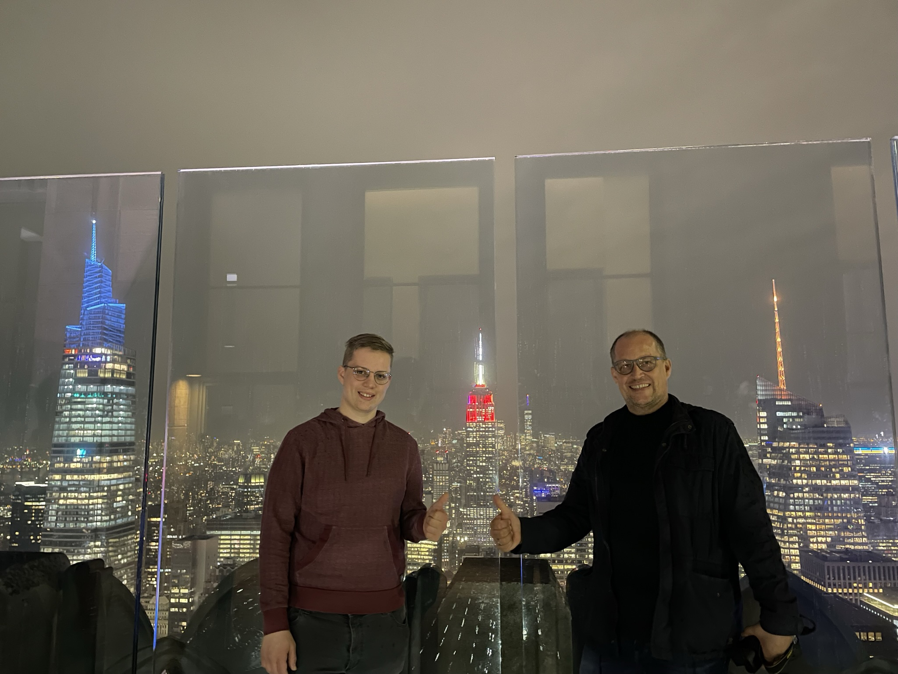
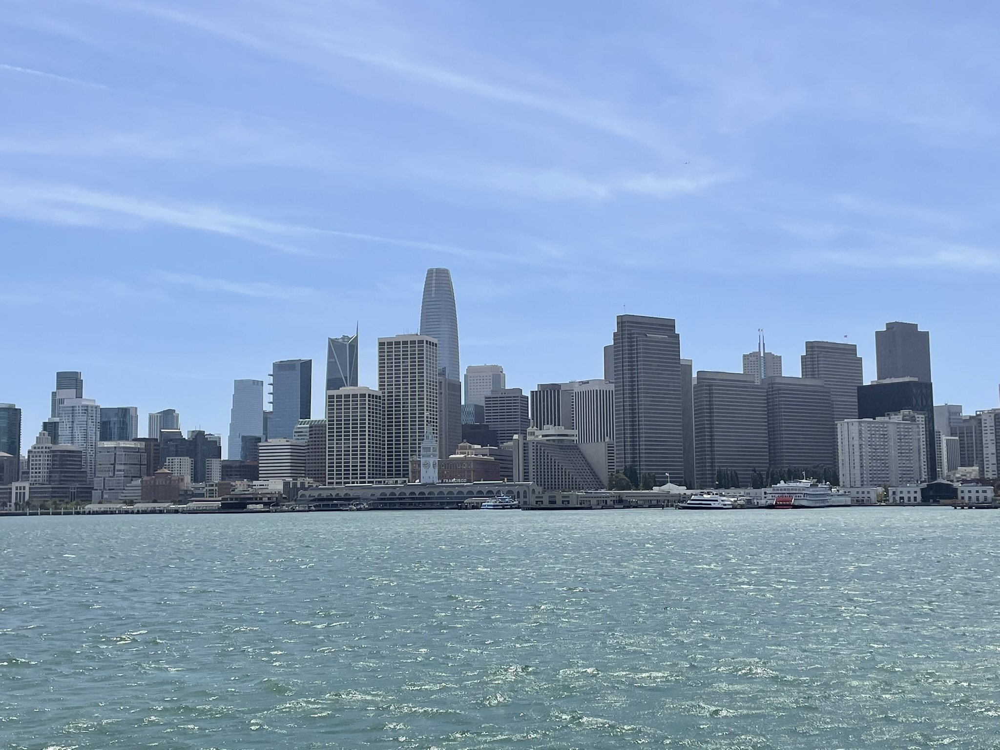
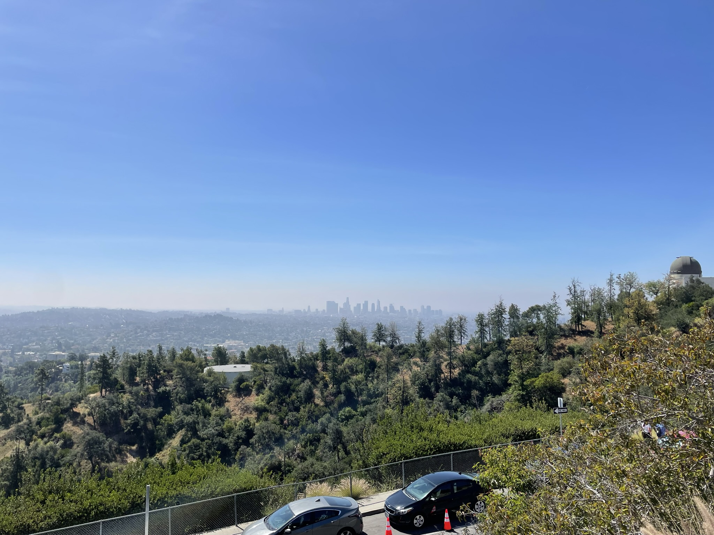
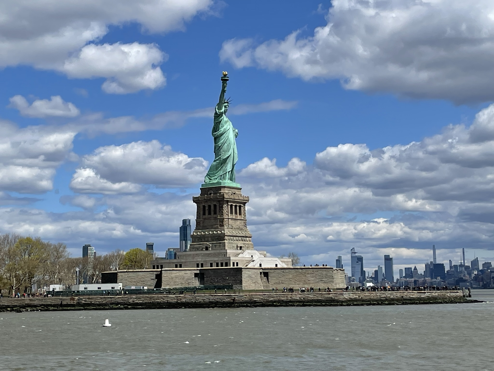
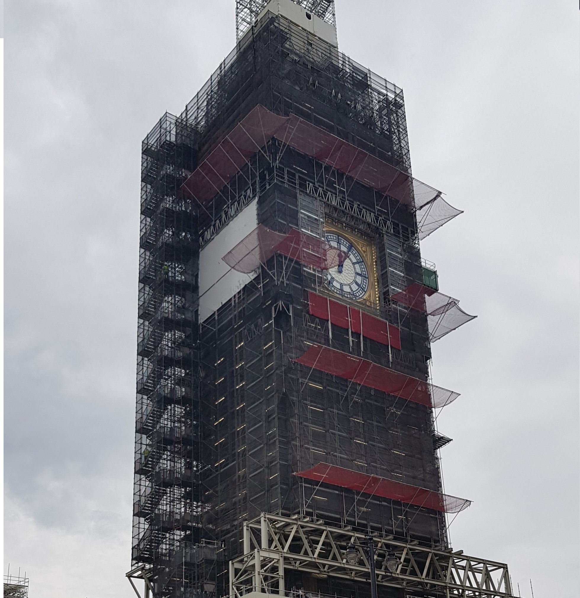
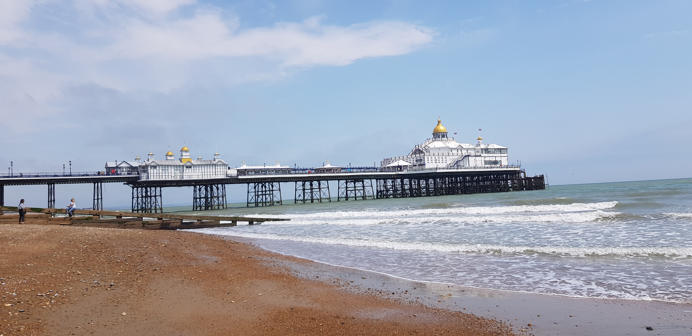

{kind=link}
Einer meiner Lieblingsbilder ist eindeutig dieses... Die Brooklyn Bridge in New York City.
Gemacht wurde diese Bild von der Manhattan-Bridge aus mit einem Iphone12.

{kind=link}
Diese wunderbare Bild von meinem Papa und mir entstand am Rockefeller Center in New York City.

{kind=link}
Die schönste Stadt in der ich jemals war, ist eindeutig San Francisco. Siehe selbst:

Die "westcoast" der Vereinigten Staaten hat es insich! Dieses wunderbare Foto
ist zwischen San Francisco und Los Angeles aufgenommen worden.

{kind=link}
Meiner Meinung nach ist Los Angeles unglaublich beeindruckend
zugleich hat es mich aber leider nicht ganz so begeistert. Riesengroß, viele Menschen, viele Autos...:)

{kind=link}
Hier mal eine untypische Perspektive der Freiheitsstatue.
Unglaublich wie schön es dort ist

{kind=link}
Kommt man einmal nach London und dann ist
genau der Big Ben bzw. der Glocktower eingerüstet.

Unglaubliche Stimmung rund und auf der Tower Bridge.
Leider konnte ich eine Öffnung der beiden Brücketeile nicht bewundern.

Das war in einer Tropfsteinhöhle in Portocristo.
Leider ist die Bildqualität durch die Dunkelheit nicht ganz so gut.

Hier die "golden gate bridge" in San Francisco.
Achtung bei Überfahrt richtung San Francisco! Mautgebühr kann nur online im Vorfeld bezahlt werden.:)

Nach meiner London Besichtigung fuhr ich mit dem Zug an die Küste von England nach Eastbourne.
Da der Flughafen Gatwick Rückweg lag war dies eine perfekte Kombination, welche ich jedem empfehle der einen Trip nach London macht..
Das bin ich...
Text über mich...